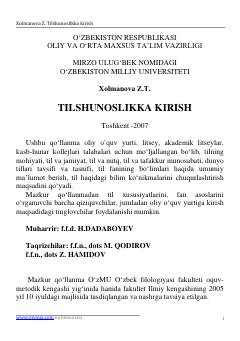

TKTilshunoslik fanining asosiy tushunchalari va nazariy asoslarini o'rganishga bag'ishlangan o'quv qo'llanma.
Ushbu o'quv qo'llanma oliy o'quv yurtlari va akademik litsey talabalari uchun mo'ljallangan bo'lib, tilning mohiyati, til va jamiyat, til va tafakkur munosabatlari hamda tilshunoslik fanining asosiy bo'limlari haqida umumiy ma'lumot beradi. Kitobda tilshunoslik fanining predmeti, vazifalari va tarixiy taraqqiyot bosqichlari o'zbek tili misolida atroflicha yoritilgan.